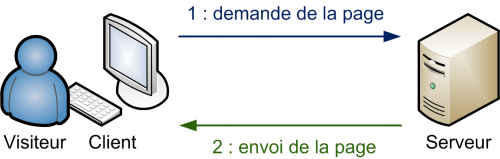
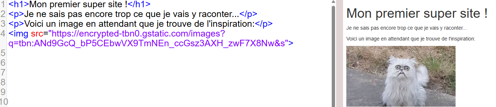
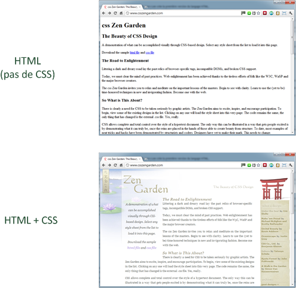
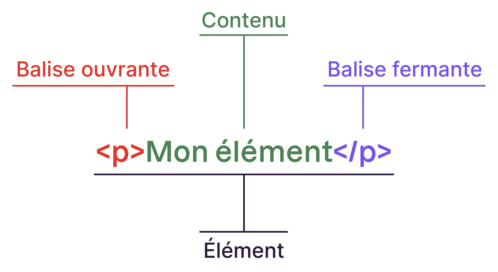
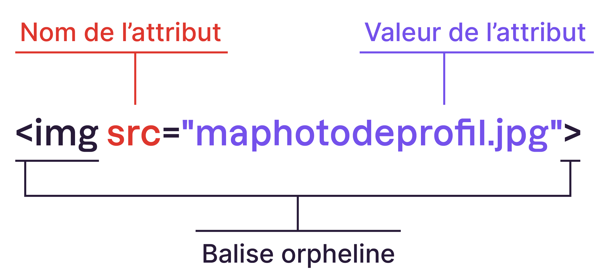
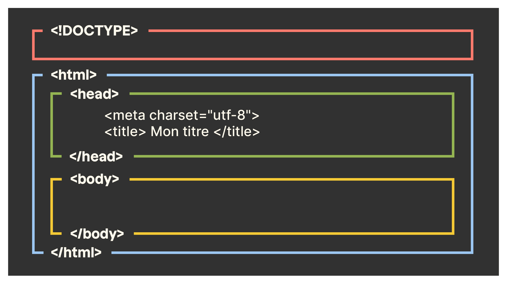

1. Introduction à l’HTML¶
Le HTML (HyperText Markup Language) a fait son apparition dès 1991 au lancement du Web par Tim Berners-Lee. Son rôle est de structurer le contenu d’une page web.
Il permet d’ajouter du texte, des liens, des images, des tableaux, etc.
Tim Berners-Lee 🇬🇧
Né en 1955
L’informaticien britannique Tim Berners-Lee est le principal inventeur du Web alors qu’il travaillait au CERN à Genève dans les années 90. Il a inventé les adresses URL, le protocole HTTP et le langage HTML.

HTML5
Créé en 1991
HTML5 (HyperText Markup Language 5) est la dernière révision majeure du HTML (format de données conçu pour représenter les pages web). Cette version a été finalisée le 28 octobre 2014.
À retenir
HTML est un langage de description, pas de programmation ! Il n’est pas possible de faire de logique en HTML.
Le Web n’est qu’HTML (et quelques autres trucs)¶
Quand vous visitez un site web, le serveur du site vous transmet en réalité un fichier HTML qui sera lu et interprété par votre navigateur.

Ce fichier se trouve alors chez vous, sur votre ordinateur, et il est possible de le lire et le modifier depuis le navigateur en faisant un clic droit sur la page et en choisissant “Inspecter l’élément” ou “Afficher le code source de la page”.
Premier contact avec un code HTML¶
Voici à quoi ressemble un fichier HTML très simple :

L’HTML tout seul décrit seulement le contenu de la page, mais pas la forme. Le CSS est un autre langage du Web qui vient compléter le HTML pour rendre les pages plus jolies.
Une page HTML sans CSS ne contiendra par exemple aucune couleur (à l’exception des images).

Un langage de balises¶
Comme évoqué précédemment, le langage HTML utilise ce qu’on appelle des balises. On les écrit entre chevrons < et >:

Touches pour les chevrons
Sur mac, vous utilisez :
la touche
<pour faire le chevron ouvrantet
⇧+<pour le chevron fermant.
Les balises indiquent la nature du texte qu’elles encadrent. Elles permettent au navigateur de comprendre ce qu’il faut afficher à l’écran.
Voici quelques exemples:
<title> ... </title>: Titre de la page (s’affiche dans l’onglet du navigateur, pas sur la page)<h1> ... </h1>: Titre de niveau 1 (titre principal)<img src="...">: Image<p> ... </p>: Paragraphe
Tester facilement son code
Pour faire des tests rapides, vous pouvez vous rendre sur w3schools qui permet de rapidement voir ce que donne votre code HTML.
Paramètrer ses balises avec des attributs¶
Dans la section précédente, nous avons brièvement vu la balise <img> qui permet d’insérer une image dans la page. Il s’agit d’une balise orpheline.
Mais alors… comment spécifier l’image que nous voulons ? Cela passe par un attribut (src dans ce cas).
Les attributs sont un peu les options des balises. Ils viennent les compléter pour donner des informations supplémentaires.
Un attribut est situé dans la balise ouvrante d’une balise en paire, ou directement dans une balise orpheline, comme c’est le cas ci dessous avec la balise <img>:

L’attribut src correspond à la source de l’image. Dans l’exemple ci-dessus, l’image se trouve dans le même dossier que le fichier .html donc il suffit de donner le nom de l’image.
Il est également possible de fournir l’URL d’une image en ligne. Pour cela, faites un clic droit sur l’image que vous souhaitez utiliser puis cliquez sur “Copier l’adresse de l’image”.
Pour aller plus loin
Evidemment, il existe une multitude d’autres attributs associés à la balise <img>, telle que la taille de l’image par exemple.
Vous trouverez la liste des attributs disponibles ici.
Structure d’une page HTML¶
Je peux vous l’avouer, jusqu’ici nous avons un peu triché… En réalité, tout fichier .html doit contenir la structure de base suivante:
<!DOCTYPE html>
<html lang="fr">
<head>
<meta charset="utf-8">
<title>Le titre de ma page</title>
</head>
<body>
</body>
</html>
Voyons à quoi servent toutes ces balises.
La première ligne
<!DOCTYPE html>est une balise orpheline indispensable : elle indique qu’il s’agit d’une page HTML.La balise en paire
<html> </html>englobe tout le contenu de la page web. A l’intérieur, il y a les balises en paire<head> </head>et<body> </body>.La balise en paire
<head> </head>contient deux balises qui donnent des informations au navigateur : l’encodage et le titre de la page.La balise orpheline
<meta charset="utf-8">indique l’encodage utilisé dans le fichier.html: cela détermine comment les caractères spéciaux s’affichent (accents, idéogrammes chinois et japonais, etc.).La balise en paire
<title> </title>indique au navigateur le titre de la page web. Toute page doit avoir un titre qui décrit ce qu’elle contient, il s’affichera dans l’onglet du navigateur, et apparaîtra dans les résultats de recherche, comme sur Google. Autant vous dire que bien choisir son titre est important !La balise en paire
<body> </body>contient tout ce qui sera affiché à l’écran sur la page web (c’est ici que vous passerez 99% de votre temps).
Attention
L’ordre des balises est super important ! Elles doivent s’emboiter les unes dans les autres, un peu comme des poupées russes.

Les commentaires¶
À retenir
Tout code informatique se doit d’être suffisamment commenté pour faciliter sa compréhension par un autre humain.
Même vous, vous pouvez oublier ce que fait votre code avec le temps… Les commentaires sont là pour vous aider !
Un commentaire en HTML est donc un texte qui sert simplement de mémo. Il n’est pas affiché, il n’est pas lu par l’ordinateur, cela ne change rien à l’affichage de la page.
Souvenez-vous, en python, nous ajoutons un commentaire grâce au symbole #.
En HTML, la syntaxe est la suivante:
<!-- Ceci est un commentaire -->
Résumé des balises de ce chapitre¶
Structure de base d’une page HTML:
<!DOCTYPE html>
<html lang="fr">
<head>
<meta charset="utf-8">
<title>Le titre de ma page</title>
</head>
<body>
<h1>Bienvenue sur mon super site !</h1>
<p>Blablabla</p>
etc...
</body>
</html>
Titre de la page:
<title> ... </title>Titre de niveau 1 (titre très important):
<h1> ... </h1>Titre de niveau 2 (titre important):
<h2> ... </h2>…
Titre de niveau 6 (titre vraiment pas important):
<h6> ... </h6>Paragraphe:
<p> ... </p>Image:
<img src="...">Commentaire:
<!-- Ceci est un commentaire -->
Exercice récapitulatif 1¶
Exercice récapitulatif 1
Ecrivez la page web principale d’un site d’agence de voyage dans un fichier nommé destination2025.html.
Vous êtes libre sur le contenu mais la page doit contenir les éléments suivants:
Le titre “Pays à visiter en 2025” qui doit apparaître dans l’onglet du navigateur.
Présentation de 3 pays de votre choix, avec à chaque fois un titre, un paragraphe et une image.
Un mot écrit en gras (à vous de chercher sur internet la balise qui permet de le faire).
Un commentaire indiquant le site où vous avez trouvé la balise permettant de mettre un mot en gras.
Déposez votre fichier sur Moodle à l’endroit prévu.